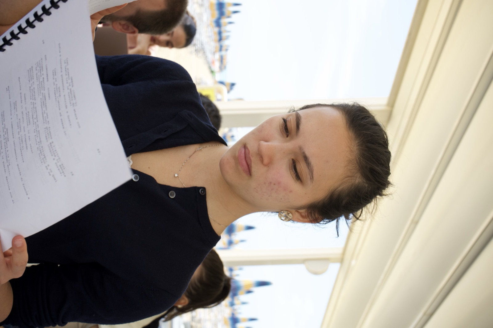
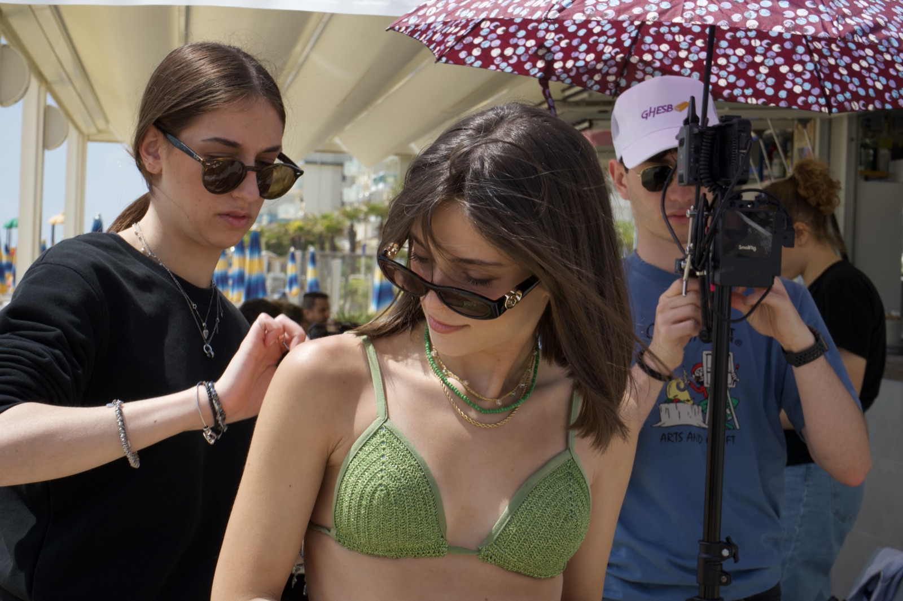
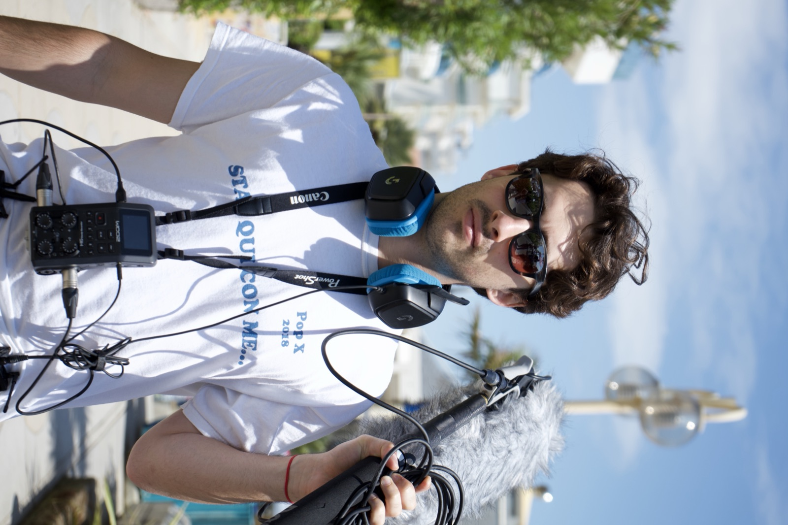
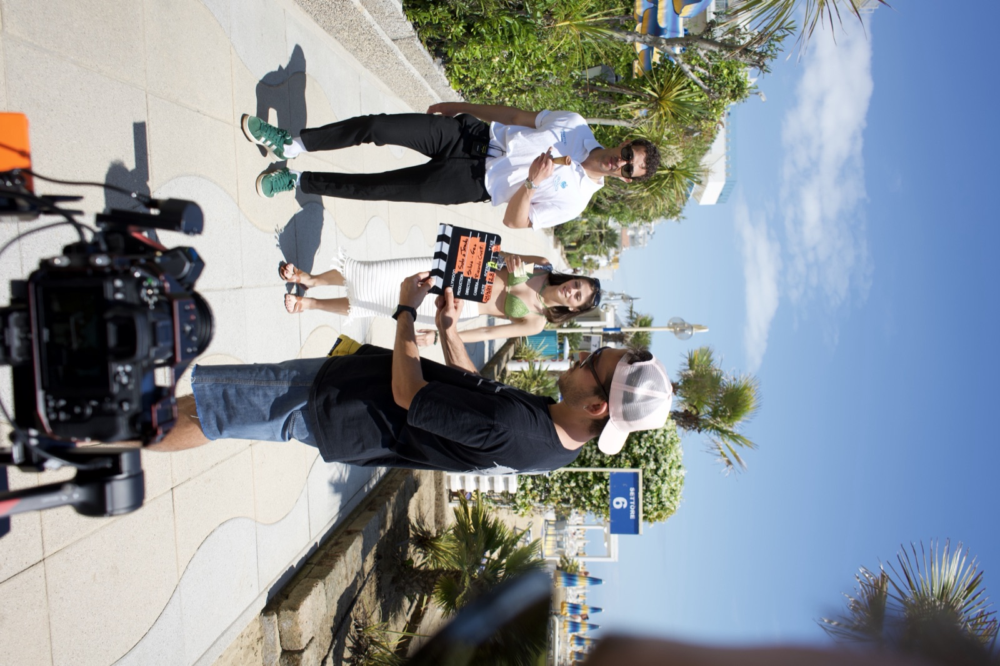
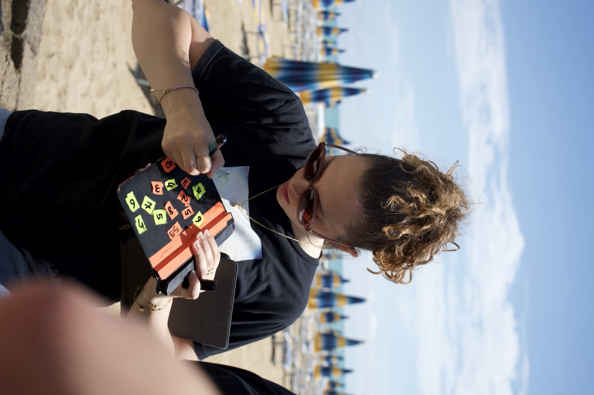
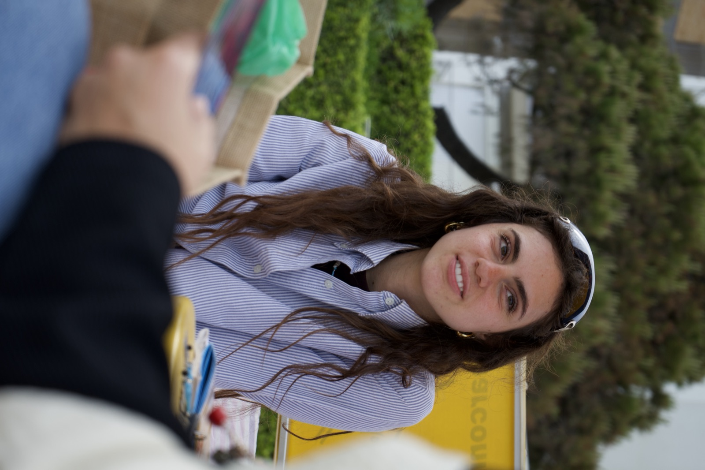
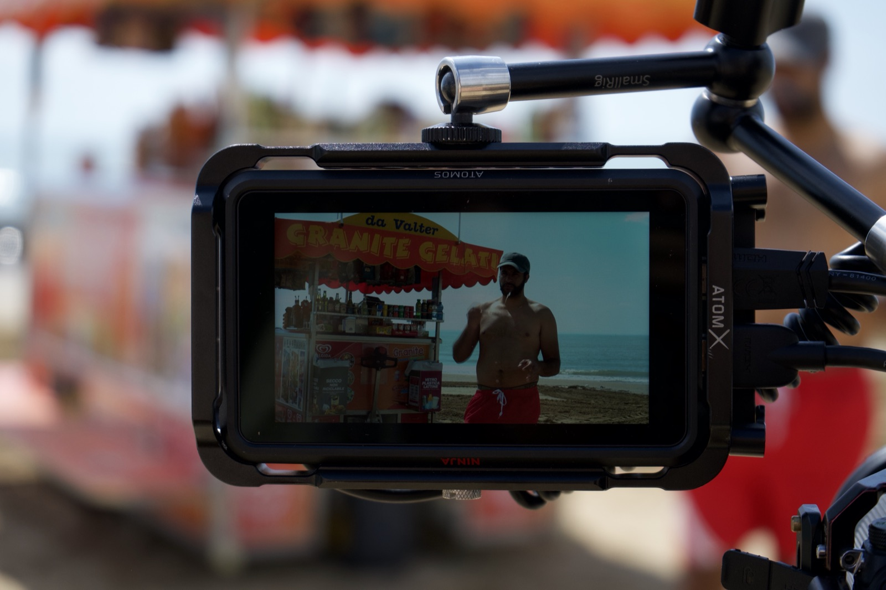

Solo a Jesolo
Episodes
- Ep. 01Tutto inizia qui
- Ep. 02Bombolone o toast all'avocado?
- Ep. 03La collana scomparsa
- Ep. 04Qui Pro Quo
- Ep. 05Al momento sbagliato
- Ep. 06Niente di serio
- Ep. 07Iniziano i preparativi
- Ep. 08Festa all'Agorà
- Ep. 09Haters to lovers
- Ep. 10Giornata storta
- Ep. 11Per fortuna ci sei tu
- Ep. 12Verità scomode
- Ep. 13Una lunga serata
- Ep. 14A cuore aperto
- Ep. 15Ricapitolando
- Ep. 16Solo a Jesolo
Logline
In Jesolo, a group of young people live a summer of friendships, first loves and moments destined to be remembered.
Synopsis
Set in the lively seaside town of Jesolo, Solo a Jesolo follows a group of friends through one summer. Among beaches, clubs, hotels and beach kiosks, Sofia arrives in town to spend the holidays with her best friend Greta, but meeting Tobia puts their friendship, and her own feelings, to the test. Meanwhile, Filippo, a young hotel employee, tries to win over Martina, a guest who is wary of him at first, in a story of misunderstandings, challenges and romantic gestures. Matteo, an ironic observer, narrates the group's story. Between wavering friendships, first loves, missed chances and reconciliations, the series portrays a generation growing up in a summer that, like all the best ones, seems destined to end too soon.
Artistic Vision
The series tells summer through a contemporary, dynamic look close to the new generations. Inspired by coming-of-age and teen drama series such as Summertime, Sotto il sole di Riccione and How to Have Sex, it favors short episodes, sustained editing and an ensemble narration, without giving up the emotional construction of its characters.
Music is central to the series' identity: two original tracks were created for the project, including a theme song that became its signature. Graphics, titles and visual inserts give the series a pop, recognizable look.
Results
- 3.1 million views across social media platforms
- Weekly release of Season 1 from April to June 2026
- Press coverage by Il Gazzettino, Televenezia, La Nuova Venezia, Venezia Today, Jesolo Live, Jesolo Journal and Vivi Jesolo
Characters
- MatteoThe lifeguard. The heart of the group and the voice of Jesolo.
- GretaThe party girl. The soul of the nights and the energy of the group.
- SofiaThe best friend. Curious and thoughtful, she arrives with everything left to discover.
- FilippoThe joker. Ironic, impulsive and irresistible.
- TobiaThe mysterious one. A silent observer who loves details.
- MartinaThe snob. Elegant and brilliant, apparently out of reach.
Main Credits
- Created & Written byGea Wang, Silvia Zennaro
- DirectorSilvia Zennaro
- Executive ProducerGea Wang
- EditorSilvia Zennaro
- LocationJesolo, Italy
About the Project
Solo a Jesolo was born from the shared passion of two childhood friends who grew up in Jesolo, Silvia Zennaro and Gea Wang, for visual storytelling and for their hometown. Shot in May 2025 on location with a crew of over 45 people, the series was developed with the cultural association Sinergy, founded by the two creators.
Behind the Scenes






